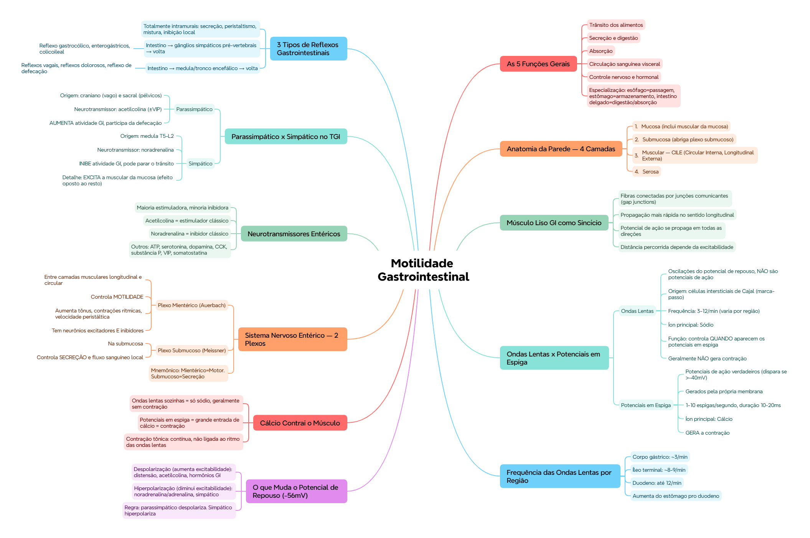

🎯 O que você vai conseguir fazer depois desse capítulo
Descrever as 4 camadas da parede do tubo digestivo e a organização da camada muscular
Explicar por que o músculo liso GI funciona como um sincício
Diferenciar ondas lentas de potenciais em espiga — origem, função, íon envolvido
Explicar o que despolariza e o que hiperpolariza o músculo liso GI
Diferenciar o plexo mientérico do plexo submucoso
Comparar os efeitos do parassimpático e do simpático no TGI
Classificar os 3 tipos de reflexos gastrointestinais
🧭 As 5 funções gerais do aparelho digestivo
O tubo digestivo garante aporte contínuo de água, eletrólitos, vitaminas e nutrientes através de 5 processos integrados:
Trânsito dos alimentos ao longo de todo o tubo
Secreção dos sucos digestivos e digestão dos alimentos
Absorção dos produtos digeridos, água, vitaminas e eletrólitos
Circulação sanguínea pelas vísceras, transportando o que foi absorvido
Controle de tudo isso pelos sistemas nervoso local e hormonal
Cada segmento se especializa numa função: esôfago = simples passagem, estômago = armazenamento, intestino delgado = digestão e absorção.
🧱 Anatomia da parede gastrointestinal
De fora pra dentro (ou de dentro pra fora, dependendo de como você decorou), a parede tem 4 camadas:
Camada
Detalhe
1. Mucosa
Inclui a muscular da mucosa (fina camada muscular própria)
2. Submucosa
Tecido conjuntivo, abriga o plexo submucoso
3. Muscular
CILE — Circular Interna, Longitudinal Externa
4. Serosa
Camada externa
💡 CILE: Circular Interna, Longitudinal Externa — decore essa sigla, ela evita trocar a ordem das duas camadas musculares na prova.
🔗 O músculo liso GI funciona como um sincício
Cada fibra muscular lisa mede 200-500 µm de comprimento e 2-10 µm de diâmetro, organizadas em feixes de até 1.000 fibras paralelas. Dentro de cada feixe, as fibras estão conectadas eletricamente por junções comunicantes (gap junctions), que deixam íons passarem de célula a célula com baixa resistência — mais rápido no sentido longitudinal que no lateral.
Os feixes se fundem entre si em vários pontos, formando uma trama ramificada. Resultado: quando um potencial de ação surge em qualquer ponto, ele se propaga em todas as direções pela camada muscular inteira — por isso "sincício".
🟢 Detalhe importante: a distância que o potencial percorre depende da excitabilidade do músculo — às vezes para depois de milímetros, outras vezes atravessa a largura e o comprimento inteiros do tubo digestivo.
⚡ Atividade elétrica: ondas lentas x potenciais em espiga
O músculo liso GI é excitado por uma atividade elétrica intrínseca, lenta e quase contínua, com 2 tipos de onda. Essa comparação é a espinha dorsal deste capítulo:
Ondas Lentas
Potenciais em Espiga
O que são
Oscilações lentas do potencial de repouso — NÃO são potenciais de ação
Potenciais de ação verdadeiros, disparam se o potencial ultrapassa -40 mV
Origem
Possivelmente células intersticiais de Cajal (marca-passo)
Geradas automaticamente pela própria membrana do músculo liso
Frequência
3-12 por minuto (varia por região)
1-10 espigas por segundo
Duração
Não aplicável (oscilação contínua)
10-20 ms — até 40x mais longas que PA de fibras nervosas grandes
Gera contração?
Geralmente não (exceto talvez no estômago)
Sim — permite entrada maciça de Ca²⁺
Íon principal
Sódio
Cálcio (+ um pouco de sódio)
Função
Controlar o APARECIMENTO dos potenciais em espiga
Gerar a contração muscular
📌 O que o professor cobra nesta seção: essa tabela inteira, célula por célula — é a base de várias questões de associação/comparação do capítulo.
📍 Frequência das ondas lentas por região
Região
Frequência
Corpo gástrico
~3/min
Íleo terminal
~8-9/min
Duodeno
até 12/min
💡 Note o padrão: a frequência AUMENTA conforme desce do estômago pro duodeno, e depois se estabiliza numa faixa intermediária no íleo terminal. As células intersticiais de Cajal formam uma rede entremeada às camadas musculares, com contatos parecidos com sinapses.
🔋 O que muda o potencial de repouso (-56 mV em média)
Efeito
Causas
Despolarização
Potencial menos negativo → AUMENTA excitabilidade
Distensão do músculo, acetilcolina, hormônios GI específicos
Hiperpolarização
Potencial mais negativo → DIMINUI excitabilidade
Noradrenalina/adrenalina, estimulação simpática
🏥 Regra de ouro clínica: parassimpático favorece despolarização (mais atividade motora GI), simpático favorece hiperpolarização (menos atividade, pode até parar o trânsito intestinal).
🧮 Cálcio é quem contrai o músculo
As ondas lentas sozinhas só permitem entrada de sódio — não costumam gerar contração por si só. É durante os potenciais em espiga, disparados no pico das ondas lentas, que entram grandes quantidades de cálcio, gerando a maior parte das contrações.
Existe também a contração tônica — contínua, não ligada ao ritmo elétrico básico das ondas lentas, podendo persistir minutos ou horas, com intensidade variável. Ocorre por espigas repetidas contínuas, ou por despolarização parcial contínua sem gerar potencial de ação de fato (mecanismo ainda não totalmente esclarecido).
🕸️ Sistema nervoso entérico — os 2 plexos
Plexo Mientérico (Auerbach)
Plexo Submucoso (Meissner)
Localização
Entre as camadas musculares longitudinal e circular
Na submucosa
Controla principalmente
Movimentos gastrointestinais (motilidade)
Secreção e fluxo sanguíneo local
Efeitos
Aumenta tônus da parede, intensifica contrações rítmicas, aumenta velocidade da onda peristáltica; tem neurônios excitadores E inibidores (inibidores relaxam esfíncteres)
Integra sinais sensitivos do epitélio, controla secreção intestinal local, absorção, contração do músculo da mucosa
💡 Mientérico = MOTOR (motilidade). Submucoso = SECREÇÃO (fica mais perto da mucosa, onde a secreção acontece).
💭 Regra geral: a maioria dos neurotransmissores entéricos é estimuladora, e a minoria é inibidora — não precisa decorar os 12 igualmente, mas saiba que acetilcolina é o estimulador clássico e noradrenalina o inibidor clássico.
⚖️ Parassimpático x Simpático no TGI
Parassimpático
Simpático
Origem
Craniano e sacral
Medula espinal, entre T5 e L2
Trajeto
Craniano: nervo vago. Sacral: nervos pélvicos
Cadeias simpáticas → gânglio celíaco e mesentéricos
Regiões
Craniano: esôfago até 1ª metade do intestino grosso. Sacral: metade distal do cólon, reto, ânus
Quase todo o TGI, sem preferência regional
Neurotransmissor
Acetilcolina (± VIP)
Noradrenalina
Efeito geral
AUMENTA atividade GI; participa do reflexo de defecação
INIBE atividade GI; pode parar o trânsito intestinal
🟢 Detalhe frequentemente esquecido: o simpático não é só "inibidor passivo" — ele ativamente EXCITA a muscular da mucosa (efeito oposto ao resto do TGI) enquanto INIBE os neurônios do sistema nervoso entérico.
🔁 Reflexos gastrointestinais — 3 tipos
Totalmente intramurais — ficam dentro da própria parede intestinal: secreção digestiva, peristaltismo, contrações de mistura, inibição local
Do intestino aos gânglios simpáticos pré-vertebrais e de volta — sinais de longa distância. Exemplos: reflexo gastrocólico (estômago → evacuação do cólon), reflexos enterogástricos (cólon/intestino delgado → inibem motilidade/secreção gástrica), reflexo colicoileal (cólon → inibe esvaziamento do íleo)
Do intestino à medula/tronco encefálico e de volta — incluem reflexos vagais (estômago/duodeno ↔ tronco encefálico, controlam motilidade/secreção), reflexos dolorosos (inibição geral do TGI), e reflexos de defecação (cólon/reto → medula → contrações potentes de cólon/reto/abdome)
✅ O que você deve lembrar
Ondas lentas = Na⁺, controlam quando a espiga aparece, geralmente NÃO contraem. Potenciais em espiga = Ca²⁺, geram a contração de fato.
⚠️ Erro comum
Achar que o simpático simplesmente "não faz nada" no TGI — na verdade ele ativamente hiperpolariza, inibe o sistema entérico E excita a muscular da mucosa.
⚡ Questão rápida
O reflexo gastrocólico (estômago → evacuação do cólon) é de qual dos 3 tipos de reflexo GI?
Tipo 2 — reflexo que vai do intestino aos gânglios simpáticos pré-vertebrais e volta, transmitindo sinal de longa distância dentro do próprio tubo digestivo.
🧠 Autoexplicação
Por que faz sentido, do ponto de vista funcional, que as ondas lentas sozinhas geralmente NÃO gerem contração muscular?
As ondas lentas funcionam como um "relógio" ou ritmo de fundo que determina QUANDO o músculo está mais propenso a disparar um potencial de ação — elas preparam o terreno elétrico, mas não trazem cálcio suficiente pra realmente ativar a maquinaria contrátil (só trazem sódio). Se as ondas lentas já gerassem contração sozinhas, o músculo GI estaria constantemente contraindo em um ritmo fixo e incontrolável, sem capacidade de ser modulado por fatores externos (distensão, hormônios, neurotransmissores). Ao separar 'o ritmo de fundo' (ondas lentas) da 'decisão real de contrair' (potenciais em espiga, que trazem cálcio), o sistema ganha um ponto de controle extra — outros fatores podem intensificar ou suprimir os potenciais em espiga sem alterar o ritmo basal, permitindo uma modulação fina da motilidade.
🔄 Tipos de movimento no TGI
O tubo digestivo tem apenas 2 tipos funcionais de movimento:
Movimentos de propulsão — deslocam o alimento ao longo do tubo, numa velocidade adequada pra digestão/absorção (ex: peristaltismo)
Movimentos de mistura — mantêm o conteúdo intestinal permanentemente misturado
⚠️ Onde todo mundo escorrega
Trocar o íon principal de cada onda — ondas lentas = sódio (não contraem); espigas = cálcio (contraem)
Inverter os efeitos do parassimpático/simpático na membrana — para/simpático despolariza (excita), simpático hiperpolariza (inibe)
Confundir plexo mientérico (motilidade) com plexo submucoso (secreção/absorção)
Esquecer que o simpático ativamente excita a muscular da mucosa, mesmo inibindo o resto do sistema entérico
Misturar os 3 tipos de reflexo GI — o critério é a EXTENSÃO do circuito (intramural x gânglios pré-vertebrais x SNC)
📚 Se você só puder lembrar de 6 coisas
4 camadas da parede: mucosa, submucosa, muscular (CILE), serosa
Músculo liso GI = sincício, propaga PA em todas as direções via junções comunicantes
Ondas lentas (Na⁺, não contraem) x Potenciais em espiga (Ca²⁺, contraem)
3 tipos de reflexo GI: intramural, via gânglios pré-vertebrais, via SNC
🩺 Caso Clínico Progressivo — Íleo Paralítico Pós-Operatório
Vamos acompanhar a Dona Ivone, 67 anos, no pós-operatório de uma cirurgia abdominal. O caso evolui em 3 níveis — clica em cada um pra ver como as coisas vão se desenrolando.
🧠 Mapa Mental — Motilidade, Controle Nervoso e Circulação do TGI
Visão geral do capítulo em formato visual — ideal pra revisão rápida antes da prova. O conteúdo completo, com explicações e exemplos, está no Guia de Estudo.

🃏 Flashcards — SM-2 real + interface Anki
O sistema guarda, no seu navegador, quais cards você já sabe bem e quais precisam voltar mais cedo — cada vez que você avalia um card, ele recalcula quando ele deve voltar.
Cartão 1 / 0Dominados: 0
PERGUNTA
RESPOSTA
✅ Banco de Questões Comentadas
10 questões, do mais básico ao mais puxado. Escolhe uma alternativa, depois clica em "Ver comentário completo" — vale a pena ler até quando você acerta, porque o comentário explica cada alternativa, não só a certa.